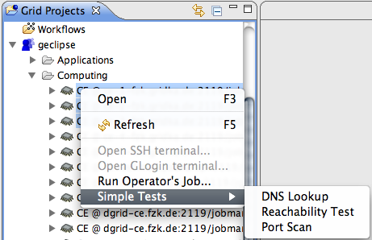

Simple Test Framework
How to implement support for a new Simple Test?
- A framework to perform simple tests on physical resource are provided. Current implementations
provides the following exemplary tests
- Host Reachability Test
- DNS lookup Test
- Port Scan Test
UI Components
Each of the tests will have their own GUI, but they will be activated through the
context menu from physical resources in the Grid Project view.
The context menu with the simple tests

Important Extension points
Core extension point
eu.geclipse.core.simpleTests- Provides a scheme for defining new test (non GUI part)
by descriptor, id, and name
UI extension point
eu.geclipse.ui.simpleTestUI- Provides a scheme for defining new test (the GUI part)
by id, name, and class.
Interfaces to implement
eu.geclipse.core.simpleTest.ISimpleTest- Implement this to represent your test.
eu.geclipse.core.simpleTest.ISimpleTestDescription- Implement this in order to hold all parameters that are
needed to create a test.
eu.geclipse.ui.ISimpleTestUIFactory- Implement this to represent the GUI for your test.
Base classes that can be extended
eu.geclipse.ui.AbstractSimpleTestUIFactory- A base class that can be extended for the UI factory of your test.